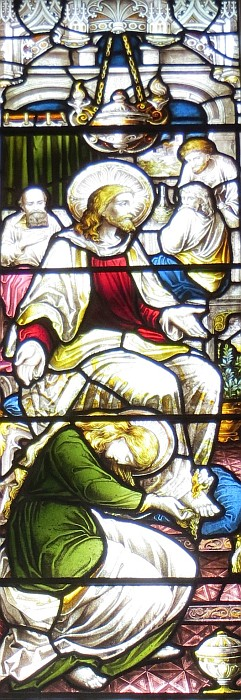
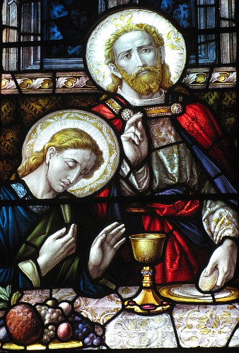
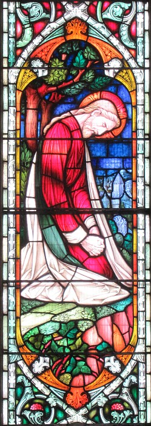

La Bouonne Nouvelle s'lon Matchi: 26
Vèrsets 1-30
Et quand Jésû avait finni toutes ches patholes, i' dit ès discipl'yes:
"Ou savez qu'i' y'étha la Pâque en deux jours, et l'Fis d'l'houmme es'sa crucifié."
Épis les grands prêtres et l's êcrivains et les grôsses têtes lus assemblyîtent siez l'chef prêtre, tch'avait nom Caïaphas,
Et i' trâmîtent coumme tchi blioutchi Jésû en l'tritchant à seule fîn d'lé mett' à mort.
Mais i' dîtent: "Pas duthant les fêtes, car lé monde s'en va s'mârri."

Quand Jésû 'tait à Béthannie siez Simon l'lêpreux,
eune femme, tch'avait eune boêtée en albâtre d'onguent bein couôtageux, vînt à li et coumme i' 'tait assis à tabl'ye oulle onguennait sa tête.
Quand les discipl'yes èrmèrtchîtent chenna, i' fûtent mârris et dîtent: "Pouortchi chutte gaspill'lie?
J'éthêmes peu vendre ch't onguent pouor un tas d'sou à seule fîn d'les donner ès pauvres."
Mais Jésû comprînt et lus dit: "Pouortchi qu'ous embâtez chutte femme-chîn? Car ou m'a fait du bein.
Véthe, ous éthez tréjous des pauvres acanté vous, mais, mé, ou n'm'éthez pon tréjous.
En onguennant man corps d'même, ou m'a grée pouor m'n entèrrement.
Véthe, j'vos dis qu'à touos les bords dans l'monde tchi r'chèvent chutte bouonne nouvelle, nou s'en va pâler dé chein qu'chutte femme a fait."
Épis iun des douze, tch'avait nom Judâs Iscariot, allit ès grands prêtres et dit:
"Tch'est qu'ou m'donn'nez si j'vos l'donne?" Et il' atchiêscîtent pouor trente pièches d'argent.
Et d'pis chu temps-là, il espéthait eune chance pouor l'us vendre.
Quand vînt l'preunmié jour du pain sans l'vain, les disciply'es vîntent à Jésû et lî dîtent: "Où'est qu'i' faut t'prépather l'èrpas d'Pâque?"
Et i' lus dit: "Allez en ville siez un cèrtain houmme et dites-lî 'Man maît' dit, Né v'chîn l'heuthe, j'm'en vais garder Pâque siez vous acanté mes discipl'yes.'"
Et les discipl'yes fîtent coumme Jésû l'us avait dit, et i' griyîtent la Pâque.
Quand vînt l'sé, i' 'tait assis à tabl'ye acanté les douze discipl'yes;
et coumme i' mangeaient, i' dit: "Véthe, jé vos dis qu'iun d'vous s'en va m'vendre."
I' fûtent attristrés et lî dîtent, châtchun dg'ieux, "Ch'est-i' mé, don, Seigneu?"
Et i' lus rêponnit et dit, "Lé chein tch'a châré chu pliat auve mé, ch'est li tchi m'vendra.
Lé Fis d'l'houmme s'n îtha, dé même coumme ch'est êcrit, mais l'chein tchi l'vendra s'sa maûdit – ch'tî-chîn n'éthait dgéthe deu êt' né."
Et Judâs, l'chein tchi l'avait vendu, rêponnit et dit, "Ch'est-i' mé, Maît'?" I' lî dit, "Coumme tu l'as dit."
Et coumme i' mangeaient, Jésû prînt du pain, i' l'bénit et donnit des couêpîns ès discipl'yes et dit: "Prannez-en, chennechîn est man corps."
Et i' prînt un mogue et fit d's actions d'grâce et lus en donnit et dit:
"Prannez-en, touos vous, car ch'est d'man sang du testament, tch'a 'té donné ès gens pouor lé pardon d's offenses.
Mais j'vos dis qué d'pis achteu jé n'bév'thai pon d'chu frit d'la vîngne d'vant chu jour-là quand j'en bév'thai du nouvé acanté vous dans l'rouoyaume d'man Péthe."
I' chantîtent un cantique et lus en fûtent au Mont d's Olives.
Vèrsets 6-13
Assa, Jésû 'tait à Béthannie siez Simon l'lêpreux et v'là eune femme tchi vînt à li auve un vaîssé d'albâtre pliein d'eune hielle dé grand prix qu'ou lî vèrsit sus la tête coumme i' 'tait à tabl'ye. Et quand i' vîdrent chenna, ses discipl'yes lus en mârrîdrent et dîdrent, "À tchi bouôn chutte pèrte-là? Car nou-s'éthait peu vendre chu parfum-là bein chi et en bailli les sou ès pouôrres gens."
Mais Jésû, quand i' comprînt chein qu'i' dithaient, lus dit, "Pouortchi qu'ous env'yêthêtes chutte femme-chîn? Chein qu'oulle a fait pouor mé est d'tchi bouôn. Car ous avez tréjous des pouôrres gens parmi vous, mais pouor dé mé ou n'm'éthez pon tréjous. Et quand oulle a vèrsé chu parfum-là sus man corps, ou l'a fait pouor m'ensév'li d'vant l'temps. J'vos dis, véthe, partout où'est qu'chutte bouonne nouvelle s'sa prêchie, ch'est pouor dithe partout l'monde, nou r'cordétha à la r'nommée dé chutte femme-chîn chein qu'oulle a justément fait."
Vèrsets 14-16
Épis iun d'la Douzaine, lé chein tch'avait nom Juda l'Kériotchien, s'en fut ès grands prêtres et lus d'mandit, "Tch'est qu'ou m'bârr'rêtes si j'vos bâle Jésû?" I' settlîdrent pouor trente pièches d'argent. Et entrétant Juda espéthait eune opporteunité pouor l'us bailli.
Vèrsets 26-41

Quandi qu'i' soupaient, Jésû prînt du pain, et quand i' l'eut béni, i' lé g'dachit et l'baillit à ses discipl'yes et lus dit, "Prannez, et mangiz chenna! Chennechîn est man corps." Et quand il eut prîns l'mogue, i' fit eune action d'grâces, l'us baillit et dit, "B'vez-en touos vous! Ch'est en tchi chennechîn est man sang, l'sang d'la nouvelle alliance tchi s'sa vèrsé pouor un amas d'gens pouor l'pardon d'péchés. Assa j'vos dis qué j'n'en baithai d'aut' dé chu frit-chîn entréchîn chu jour-là quand j'l'èrbaithai auve vous dans l'rouoyaume dé man Péthe."
Et quand il' eûdrent chanté l'cantique d'actions d'grâces, i' lus en fûdrent au Mont ès Olivièrs. Épis Jésû lus dit, "Ou s'sez dêtouônnés d'mé, touos vous, chutte niet, car il a 'té êcrit, 'J'achouêm'thai l'gardeux d'brébis et les brébis du troupé s'sont à banon'. Mais auprès qué j's'sai souôl'vé des morts, j'îthai l'avant à vous en Galilée."
Lé Rotchi lî rêponnit, "Quand touos l's aut's lus dêtouônn'naient d'té, jé n'mé dêtouônn'nai janmais d'té."
Épis Jésû lî dit, "Véthe, j'té dis qu'chutte niet-chîn, d'vant qu'lé co chante, tu m'èrnonch'chas trais fais."
Mais l'Rotchi lî dit, "Même si j'avais à mouothi auve té, j't'èrnonch'chai pon!" Et touos l's aut's discipl'yes dîdrent ieux étout la même chose.
Épis Jésû agângnit acanté ieux à un endrait tch'avait nom Géthsémanîn et i' dit à ses discipl'yes, "Asiév'-ous ichîn quandi qué j'm'en îthai par là pouor prier." Et quand il eut prîns acanté li l'Rotchi et les deux fis à Zébédîn, i' s'êcantit à s'engrouter et à êt' bein afflyigi. Achteu i' lus dit, "M'n âme est triste jusqu'à la mort; restez ichîn et vilyiz auve mé." Et quand i' s'en fut 'té un but pus liain, i' s'adentit dans l'aithe et dit en priant, "Man Péthe, si ch'est pôssibl'ye, fai qu'chutte modgie-chîn pâsse liain d'mé. Pouor tout chenna qu'il en sait pon coumme jé l'veurs, mé, mais coumme tu l'veurs, té."
Auprès eune pause i' vînt iou qu'ses discipl'yes 'taient et coumme i' les r'trouvit endormis, i' dit au Rotchi, "Tchi! Ou n'avez pon peu don vilyi eune heuthe auve mé! Vilyiz et priez, à seule fîn qu'ou n'veingêtes pon à l'êpreuve; l'esprit est prompt mais la chai est fouaibl'ye."
Vèrsets 42-49

I' s'en r'fut acouo eune fais prier eune deuxième fais, et i' dit, "Man Péthe, si chutte modgie-chîn n'pâss'sa pon sans qu'j'en baive, ch'est qu'ta volanté sait faite." I' r'vînt auprès chenna iou qu'i' 'taient, et les trouvit acouo endormis, car i' tchiyaient d'sommé. Et quand i' l's eut tchitté, i s'en r'fut acouo eune fais prier, et chenna pouor la traîsième fais, et i' r'dit les mêmes patholes. Là-d'ssus i' r'vînt trouver ses discipl'yes et lus dit, "Dorm'-ous achteu? R'pôs'-ous? Né v'chîn l'heuthe tch'apprèche, et l'Fis d'l'Houmme s'en va êt' trisonné entré les mains des pécheurs! Lév'-ous! Trînmouss'-ous! Lé chein tch'est pouor m'trisonner est d'amain!"
I' n'avait pon acouo finni ches patholes-chîn qué né v'là Judâ, iun d'la Douzaine, tchi vînt acanté eune dgaîngue dé gens, armés d'sâbres et d'bâtons, tch'avaient 'té env'yés par les grands prêtres et les vièrs du peupl'ye. Assa l'chein tchi l'trisonnait lus avait donné un sîngna pouor l'èrconnaître en lus dîthant, "Lé chein à tchi qu'jé f'thai un bécot, ch'est ch'tî-là qu'ou chèrchiz; gaffez-lé."
Et d'siette i' s'appréchit d'Jésû et lî dit, "Bônsouair, Maît'!" Et i' lî fit un bécot.
Vèrsets 50-58
Jésû lî rêponnit, "M'n anmîn, pouortchi qu'tu'es ichîn?" Et d'siette v'là tch'i' lus appréchîdrent et l'gaffîdrent et l'blioutchîdrent. D'un co iun des cheins tchi 'taient auve Jésû prînt san sâbre, lé dêhalit et slachit l'sèrveux du grand prêtre assez pouor en coper l'ouothelle. Jésû lî dit, "Èrcaûche tan sâbre! Ch'est en tchi touos les cheins tchi prendront l'sâbre, mouôrront par l'sâbre. Crai-tu qué jé n'saithais pon prier à man Péthe, et qu'i' n'm'env'yêthait pon ichîn en l'heu pus qu'douze légions d'anges? Mais coumme tchi don qu'les Êcrituthes lus accompliéthaient, tchi dithent qu'il est d'mêtchi qué v'là tchi s'adonne?"
Épis étout Jésû s'adréchit à chutte dgaîngue-là et lus dit, "Vos êt'-ous dêhalés armés atout des sâbres et des bâtons à seule fîn dé m'blioutchi coumme si j'tais un voleux? J'tais touos les jours assis au mitan d'vous à ensîngni dans l'templ'ye, et ou n'm'avez pon arrêté. Mais tout chenna s'est adonné à seule fîn qu'chein qu'les prophètes êcrivîdrent s'accomplyîsse." Épis touos les discipl'yes lé laîssîdrent et happîdrent la pathe.
Ches gens-là, quand il' eûdrent mîns lus mains sus Jésû, l'emm'nîdrent siez Caïphe, tchi 'tait l'grand prêtre, où'est qu'les êcrivains et les vièrs 'taient assembliés. Pouor du Rotchi, i' l'siévait au liain jusqu'au bel d'la maîson du grand prêtre, et quand il eut entré, i' s'assiévit auve les gens pouor vaie l'adgèvement d'tout.
Vèrsets 59-68
Assa les grands prêtres et toute l'assembliée des vièrs chèrchaient d'cabochi l'têmouongnage contre Jésû à seule fîn qu'i' pûdrent lé tuer; et i' n'arrivaient pon à l'èrchéver ouaithe qu'un tas d'faux têmouains lus présentîdrent. À la fîn v'là tchi geuthîdrent deux tchi dîdrent, "Ch't houmme-chîn dit, 'Mé j'peux passecrithe lé Templ'ye du Bouôn Dgieu et l'èrbâti en trais jours.'"
Lé grand prêtre sé d'butit et lî dit, "N'y'as-tu pon d'rêponse? Tch'est qu'ch'est dé tchi qu'i' t'atchûthent?"
Mais Jésû n'dit mot. Et l'grand prêtre lî dit, "J't'assèrmente l'avant au Dgieu vivant, di-nous si tu'es l'Onguenné, l'Fis du Bouôn Dgieu!"
Jésû lî dit, "Tu l'as dit, véthe. Mais j'vos dis: 'Entréchîn ou vèrrez l'Fis d'l'Houmme assis au dêtre du Pouvé et à v'nîn sus les nouages du ciel.'"
Épis l'grand prêtre s'êtrilyit les habits et dit, "Il a êcliandré l'Bouôn Dgieu! J'voulons-t-i' d'aut' têmouains? Ch'est en tchi ous avez ouï s'n êcliandréthie! Tch'est qu'est vot' vèrdi?"
I' rêponnîdrent, "I' méthite la mort!" Épis il' êcopîdrent dans sa fache et l'battîdrent et tchiqu's'uns lî baillîdrent des cliamûthes en dîthant, "Di-nous la forteune, té l'Onguenné! Tchi qui t'a bailli chutte cliamûthe?"
Vèrsets 59-68
Entrétant les grands prêtres et tout l'assembliée traichaient un faux têmouongnage contre Jésû pouor l'faithe mouothi. Et i' n'en trouvaient pon tchi fûsse suffîsant ouaithe qu'eun fliotchet d'faux têmouains lus mâtîdrent. À la fîn deux faux têmouains vîndrent tchi dîdrent, "Ch'tî-chîn dit, 'J'peux dêtruithe lé templ'ye du Bouôn Dgieu et l'èrbâti en trais jours.'"
Là-d'ssus l'grand prêtre sé l'vit et lî dit, "Tu n'rêponds rein à chein qu'ches'-chîn têmouongnent contre té?"
Mais Jésû n'dîthait mot. Et l'grand prêtre lî dit, "J'té c'mande par l'Dgieu vivant d'nos dithe si tu'es l'Onguenné, l'Fis du Bouôn Dgieu."
Jésû lî rêponnit, "Tu l'as dit: jé l'sis mais j'vos dêcliathe qu'à la siette ou vèrrez l'Fis d'l'houmme assis à la dêtre d'la majesté du Bouôn Dgieu v'nîn sus les nues du ciel."
Là-d'ssus l'grand prêtre êtrilyit ses habits et i' dit, "Il a dit d'la mêdisance! Tch'est qu'j'avons acouo bésouain d'têmouains? Ou l'avez ouï mêdithe! Tch'est qu'ous en pensez?"
I' rêponnîdrent, "Il a méthité la mort." Là-d'ssus i' li'êcopîdrent à la fache, et i' tapîdrent dessus à cos d'pouaing, et d'aut's lî baillîdrent des cliaques.
Et i' dîthaient, "Onguenné, d'vinne don! Di tchi qu'est l'chein tchi t'a tapé!"
Vèrsets 69-75
Assa Pièrre 'tait assis dans l'bel l'avant à la maîson et eune sèrvante l'achîtrit et dit, "Tu 'tais auve Jésû l'Galiléen." Mais i' l'èrnyit l'avant ès ièrs dé touos en dîthant, "Jé n'sai rein dé chein qu'tu dis."
Et quand i' s'en fut à l'uss'sie, né v'là un aut' tchi l'êpyit et dit ès cheins tchi 'taient là, "Ch't houmme-chîn 'tait auve Jésû l'Nazarétchien."
Et i' dit en juthant, "Jé n'connais pon ch't houmme-là!"
Épis auprès acouo un p'tit d'temps les cheins à l'entou vîndrent dithe à Pièrre, "Véthe, tu'es iun d'ches-là d'pis qu'tu pâle d'lus manniéthe."
Épis auve d'la juth'thie i' dit, "Jé n'connais pon ch't houmme-là!" Et né v'là d'siette nou ouït l'co chanter. Et chein qu'Jésû avait dit r'vînt à Pièrre, coumme il avait dit, "D'vant l'heuthe du cocolîncheux, tu dithas trais fais qu'tu n'mé connais pon." Et i' s'en fut en plieuthant à fraides lèrmes.
Viyiz étout:
- La Bibl'ye
- La Bouonne Nouvelle s'lon Matchi, Chapitre 1, vèrsets 1 à 17
- L'Êvangile sélon St.-Matchi: chapitre 1 versêts 18 à 25
- L'Êvangile sélon St.-Matchi: chapitre 1 vèrsets 18 à 23 - des vèrsions
- La Bouonne Nouvelle s'lon Matchi: 2
- L'Êvangile sélon St.-Matchi: chapitre 2 versêts 1 à 11 - des vèrsions
- La Bouonne Nouvelle s'lon Matchi, Chapitre 2, vèrsets xii-xvi
- La Bouonne Nouvelle s'lon Matchi: 3
- La Bouonne Nouvelle s'lon Matchi, chapitre 4
- Lé Sèrmon sus La Montangne
- La Bouonne Nouvelle s'lon Matchi: 8
- La Bouonne Nouvelle s'lon Matchi: chapitre 8 vèrsets v-xiii
- La Bouonne Nouvelle s'lon Matchi: 9
- La Bouonne Nouvelle s'lon Matchi: 10
- La Bouonne Nouvelle s'lon Matchi: 11
- La Bouonne Nouvelle s'lon Matchi: 12
- La Pathabole du S'meux s'lon Matchi
- La Bouonne Nouvelle s'lon Matchi, Chapitre 13
- La Bouonne Nouvelle s'lon Matchi, Chapitre 14
- La Bouonne Nouvelle s'lon Matchi: 15
- La Bouonne Nouvelle s'lon Matchi: 16
- La Bouonne Nouvelle s'lon Matchi: 17
- La Bouonne Nouvelle s'lon Matchi: 18
- La Bouonne Nouvelle s'lon Matchi - chapitre 19
- La Bouonne Nouvelle s'lon Matchi, Chapitre 20
- La Bouonne Nouvelle s'lon Matchi, Chapitre 21
- Lé mithacl'ye du fidgi s'lon Matchi
- La Bouonne Nouvelle s'lon Matchi, Chapitre 22
- La Bouonne Nouvelle s'lon Matchi: 23
- La Bouonne Nouvelle s'lon Matchi: 24
- La Pathabole des dgiêx vièrges
- La Pathabole des talents
- La Bouonne Nouvelle s'lon Matchi, Chapitre 25, vèrsets 29-46
- La Bouonne Nouvelle s'lon Matchi: 27
- La Bouonne Nouvelle s'lon Matchi: 28